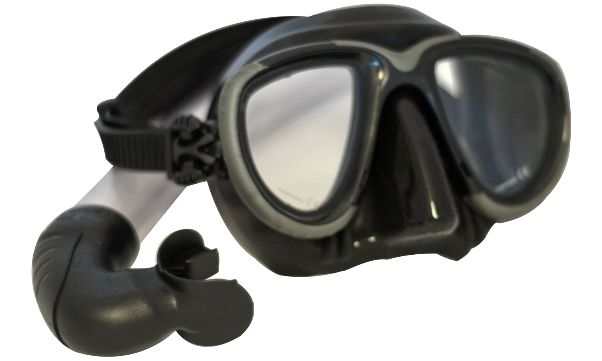
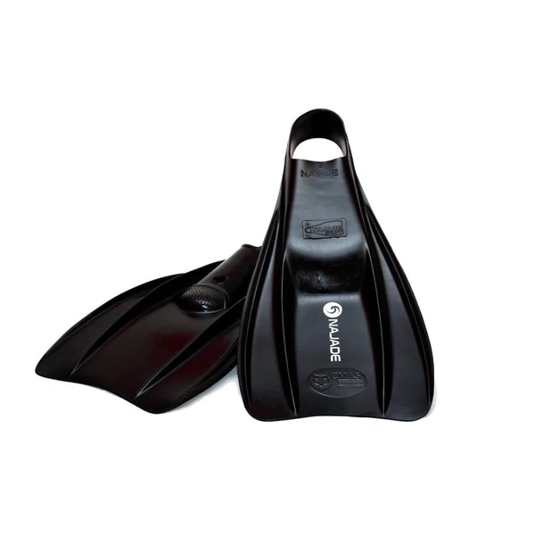
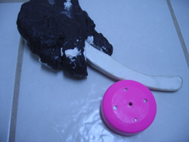
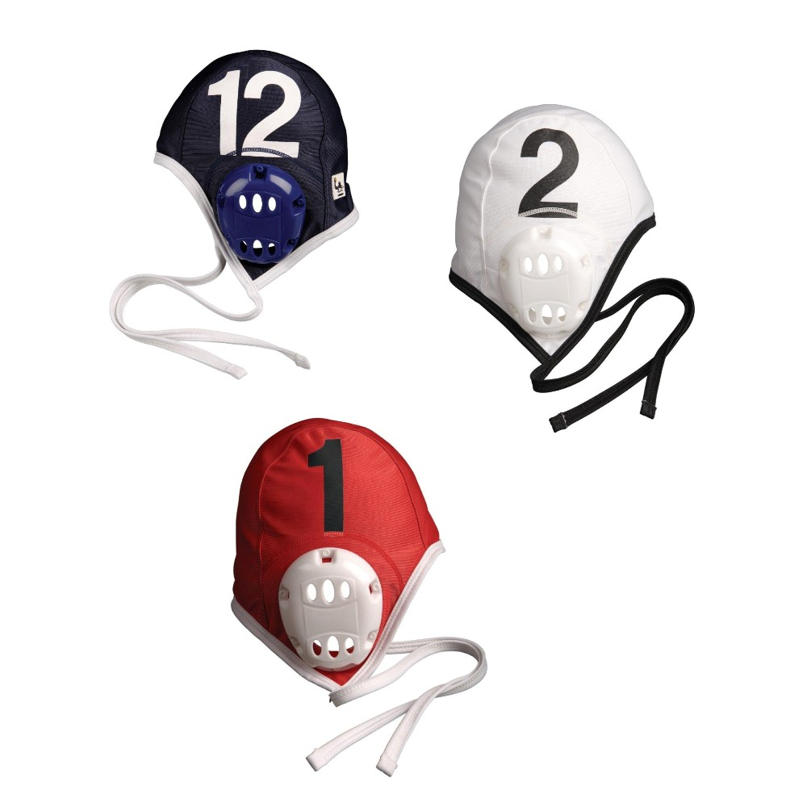
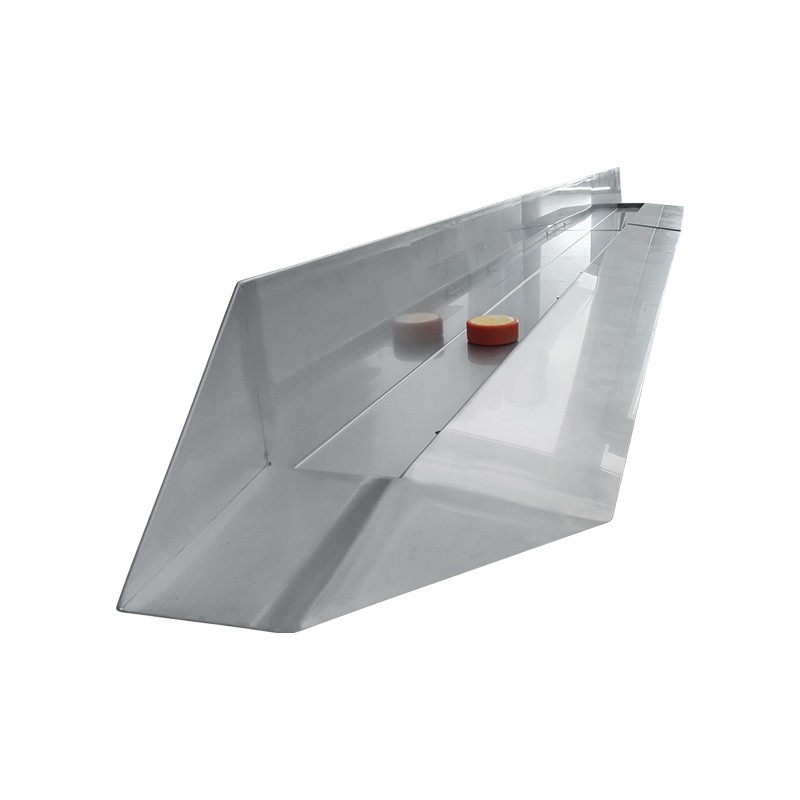

Equipment

Swimwear
There are usually no restrictions on swimwear, however baggy style trunks or shorts are not recommended as they reduce speed and increase drag in the water.
Typical swimwear is swim briefs or jammers for male players and athletic style racerback two-piece swimsuits with drawstring bottoms or one-piece swimsuits for female players.
Additionally, wetsuits are not allowed according to Rule 3.3.8 of the CMAS International Rules for Underwater Hockey, Eleventh Edition.

Mask
A diving mask is used for several reasons:
- Players can equalise their ears (using the Valsalva manoeuvre) as the nose is covered
- Unlike swim goggles, a mask sits outside the eye's orbit, reducing the effects of any impact
- Improved underwater vision
A low-volume mask with minimal protrusion from the face reduces the likelihood of the mask being knocked causing it to leak or flood and temporarily obstruct the player's vision.
The published rules require masks to have two lenses to reduce the risk and extent of possible injury from puck impact; the danger of a single lens mask is that the aperture may be large enough to allow a puck to pass through it on impact, and hence into the player's eyes.
A number of webbing strap designs are available to replace the original head strap with a non-elastic strap that can reduce the possibility of the player being unmasked.

Snorkel
A snorkel enables players to watch the progress of the game without having to lift their head from the water to breathe.
This allows them to keep their position on the surface, ready to join play once they are able.
In order to maximise the efficiency of breathing and reduce drag underwater snorkels are often short with a wide bore and may include a drain valve.
The published rules mandate that they must not be rigid or have any sharp edges or points.
The snorkel may accommodate an external mouthguard which may be worn in conjunction with, or instead of, an internal mouthguard.
Fins
Fins allow the player to swim faster through the water. A wide variety of fins are used in the sport, but large plastic/rubber composite fins or smaller, stiffer fibreglass or carbon fibre fins are commonplace at competitions.
As with any of the equipment, the published rules mandate fins without sharp edges or corners. All sharp edges must be covered up by a protective film or tape to prevent injury.
Players are also normally required to use closed-heel fins (without buckles) as a further injury prevention measure.
Even well-fitting full-foot fins can occasionally be pulled off during play, either because of physical contact with something in the playing area or as a result of the power the wearer is transmitting through them into the water.
When this occurs, stopping to refit a lost fin takes time and reduces a team to only five players.
Fin grips, also known as fin retainers or fin keepers, are triple-strap devices enabling a closed-heel fin to be held more securely on a player's foot. They are worn around the arch, the heel and the instep to try and prevent the wearer's foot from slipping out of the foot-pocket of the fin.

Stick
The stick (also referred to as a pusher) is relatively short and is coloured either white or black to indicate the player's team. The stick may only be held in one hand, which is usually determined by the player's handedness, although players may swap hands during play.
The shape of the stick may affect playing style and is often a very personal choice. A wide variety of stick designs are allowed within the constraints of the rules of the game, the principal rules being that the stick (including the handle) must fit into a box of 100 mm × 50 mm × 350 mm (3.9 in × 2.0 in × 13.8 in) and that the stick must not be capable of surrounding either the puck or any part of the hand.
A rule concerning the minimum radius of edges tries to address the risk of injury should body contact occur. Construction materials may be of wood or plastics and current rules now supersede those that previously required sticks to be homogeneous, although they almost always are anyway.
Many underwater hockey players manufacture their own sticks to their preferred shape and style, although there are increasingly more mass-produced designs to suit the majority (such as Bentfish, Britbat, CanAm, Dorsal, Stingray etc.)

Puck
The puck is approximately the size of an ice hockey puck but is made of lead or lead-based material - (adult size weighs 1.3–1.5 kg (2.9–3.3 lb), junior 800–850 g (1.76–1.87 lb)) - and is encapsulated or surrounded by a plastic covering which is usually performance-matched to different pool bottoms (e.g. tiles, concrete etc.) to facilitate good grip on the stick face while preventing excessive friction on the pool bottom. The puck's weight brings it to rest on the pool bottom, though it can be lofted during passes.
Glove
A glove should be worn on the playing hand to protect against pool-bottom abrasion and, in some designs, for protection against puck impact on knuckles and other vulnerable areas, however no rigid protection is permitted.
Players may choose to wear a protective glove on both hands, either as additional protection from the pool bottom or, for ambidextrous players, to switch the stick between hands mid-play.
A glove used in competition must be a contrasting colour to the wearer's stick, but not orange which is reserved for referees' gloves - this is so water referees might be able to better distinguish between a pusher making a legal contact with the puck and a hand making an illegal contact with the puck.
It is also usually preferred that a players glove is a different colour to the puck.
As the puck is usually pink or orange it means players should avoid gloves coloured black, white, red, orange, yellow and pink.
A referee at any match or tournament can ask a player to use different kit before they play, hence players should be careful when choosing the colour of their gloves. Blue is often used due to the limitations on glove colours, but others have also been used.
Caps
Safety gear includes ear protection, usually in the form of a water polo cap and as a secondary indicator of the player's team (coloured black/dark or white/pale as appropriate).
Water referees wear red caps.

Goal
The goals (or 'gulleys') are 3 metres (9.8 ft) wide and are sited on the pool bottom at opposite ends of the playing area in the centre of the end lines.
They consist of a shallow slope leading up to a trough into which the puck may be pushed or flicked.
Goals are commonly constructed from aluminium, galvanised steel or stainless steel.
This makes them negatively buoyant and durable in the chlorinated water of swimming pools.
